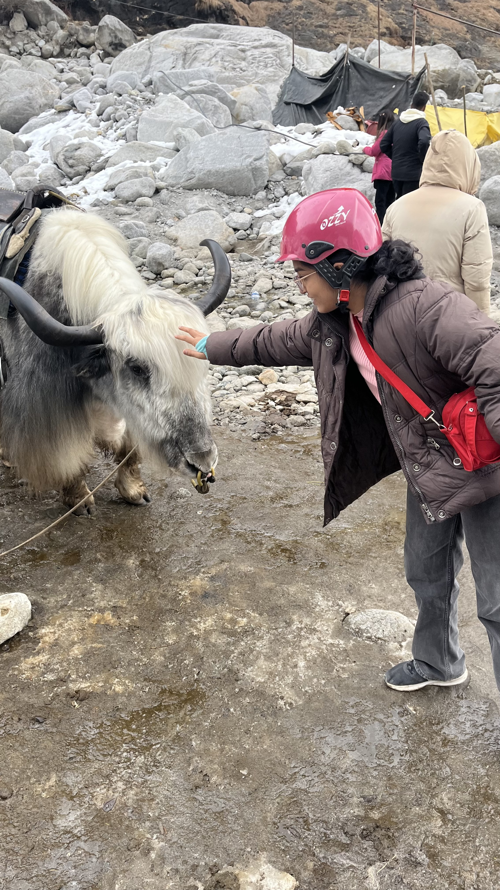
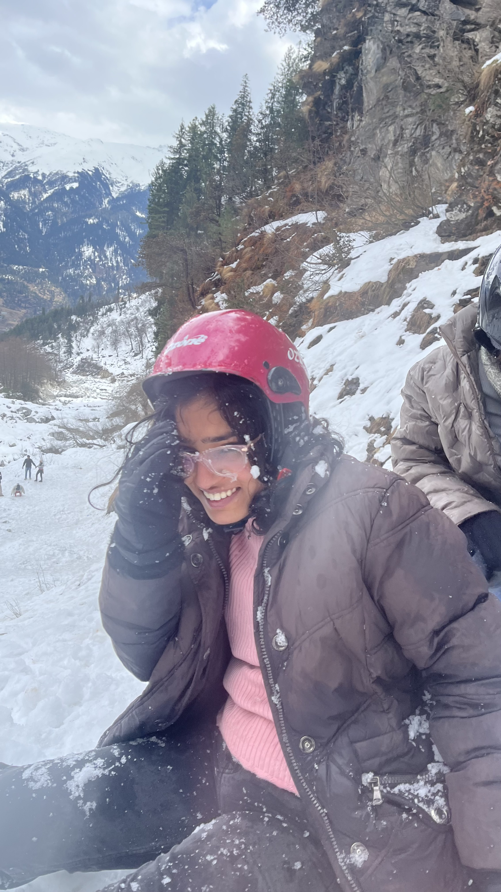
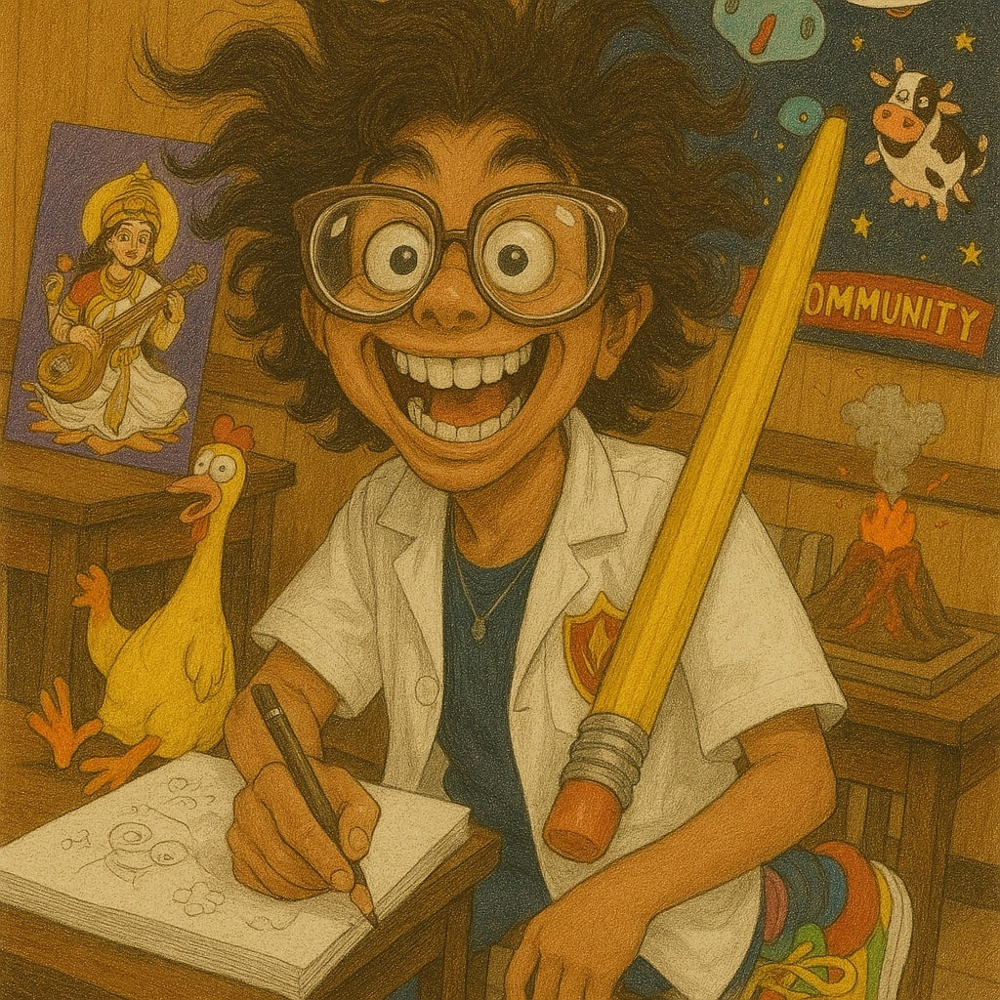
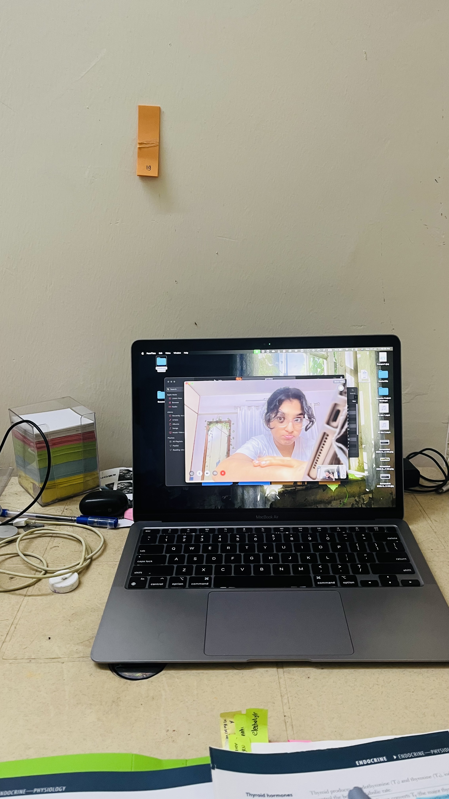
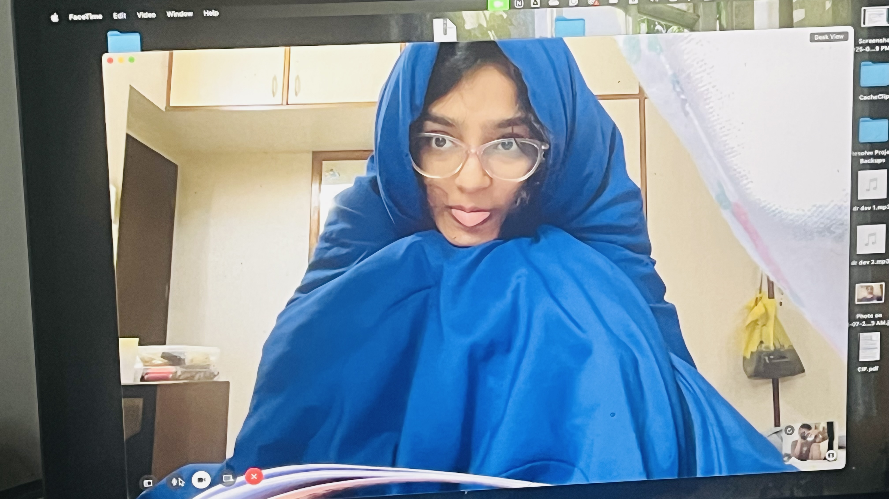
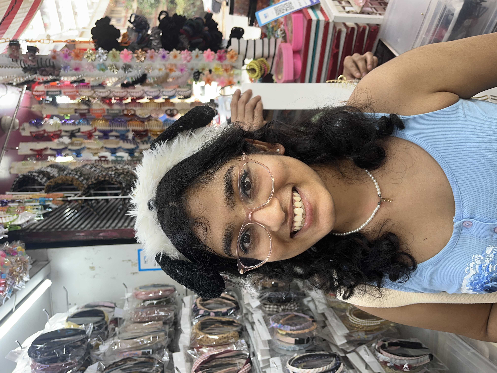

Tap anywhere to hear Kirby 🎉
Hey You :)
If you're reading this, it means the party's over and you finally opened the swan. Good. This one was meant for you, and only you.
I made this because I don't do gifts (or do I?). But after tech-headding through college and with a personal hobby, maybe I could channel my interests by creating a page. So here it is — a tiny Pinterest-styled corner of the internet dedicated to you.
Things I Appreciate About You
- Your kindness, even on days you don't feel great yourself.
- How you make people feel lighter without even trying.
- The studdy buddy who makes even boring chapters feel like sidequests.
- My backpack on wheels.
- The human GPS who never admits when lost.
- Your courage to speak the truth and hold space for hard feelings.
- The only person in H1 who can make a whole 'jo hue dekha jaega' gang act responsible.
- A multitalented snowball rolling through life collecting skills like pokemon
- USMLE accountability partner making sure I don't drift off into useless Reel-rabbit hole
- Illegal levels of serotonin in the :)
Some Moments

Brighter than sum gate

"Poyoo" "moooo"
What ra sudeep

Kidr atak gyi me

on Meth

Me when NEETPG
shooting my shot

me when NEETUG

Quest for real art

SHEEPYHEAD